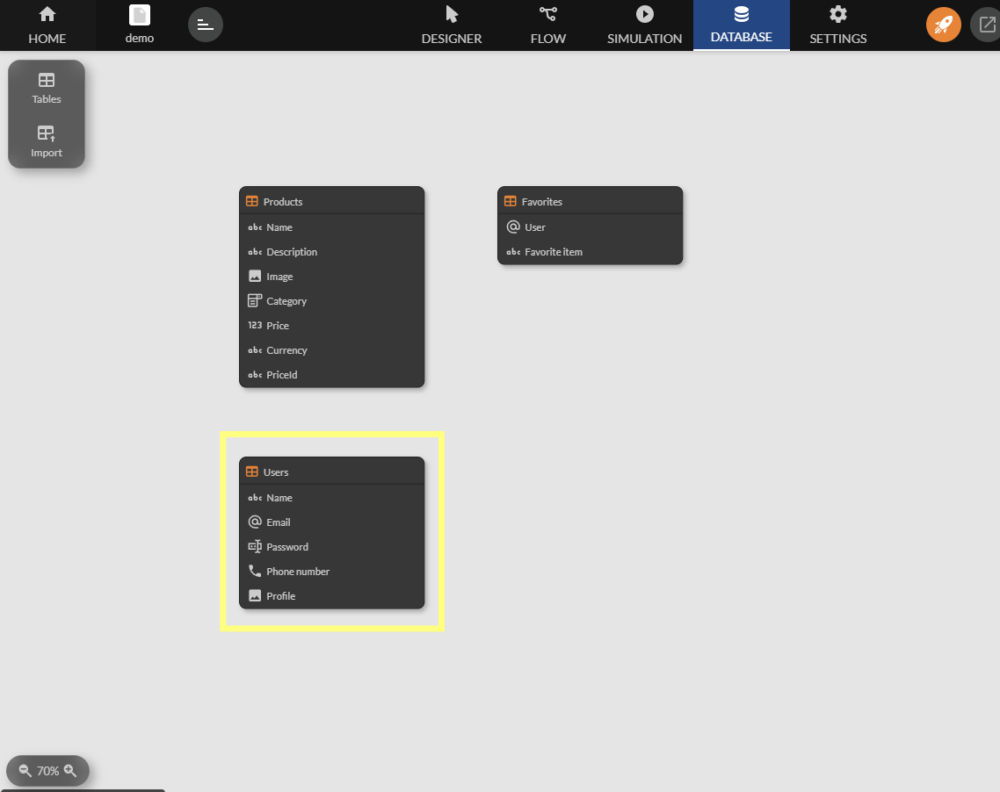
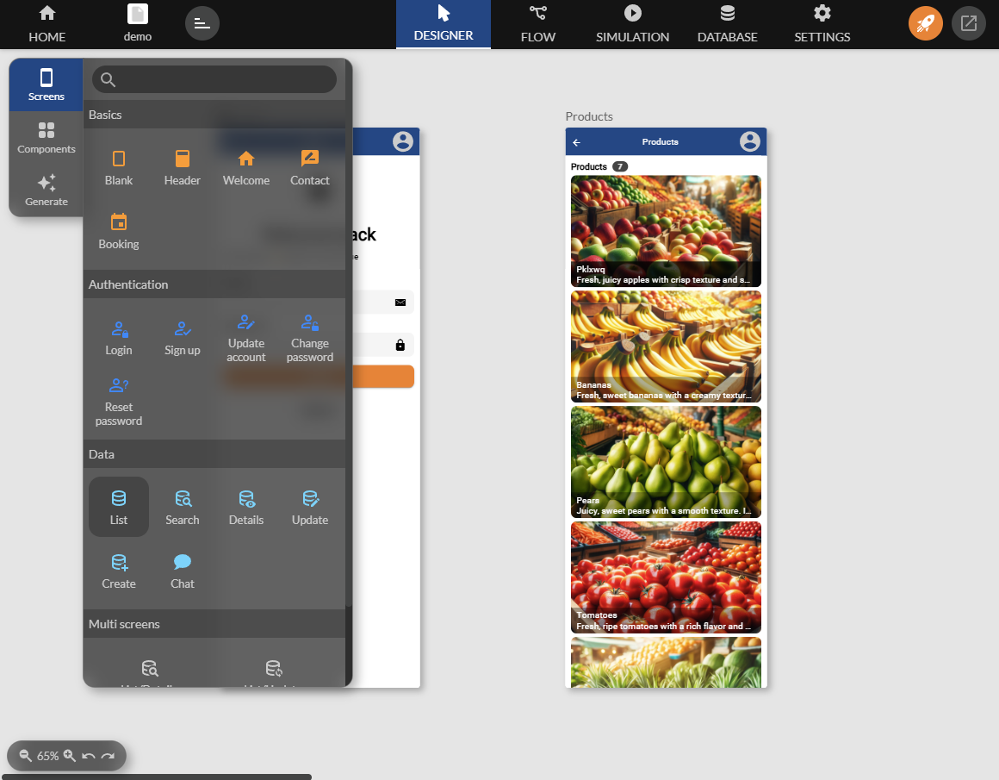
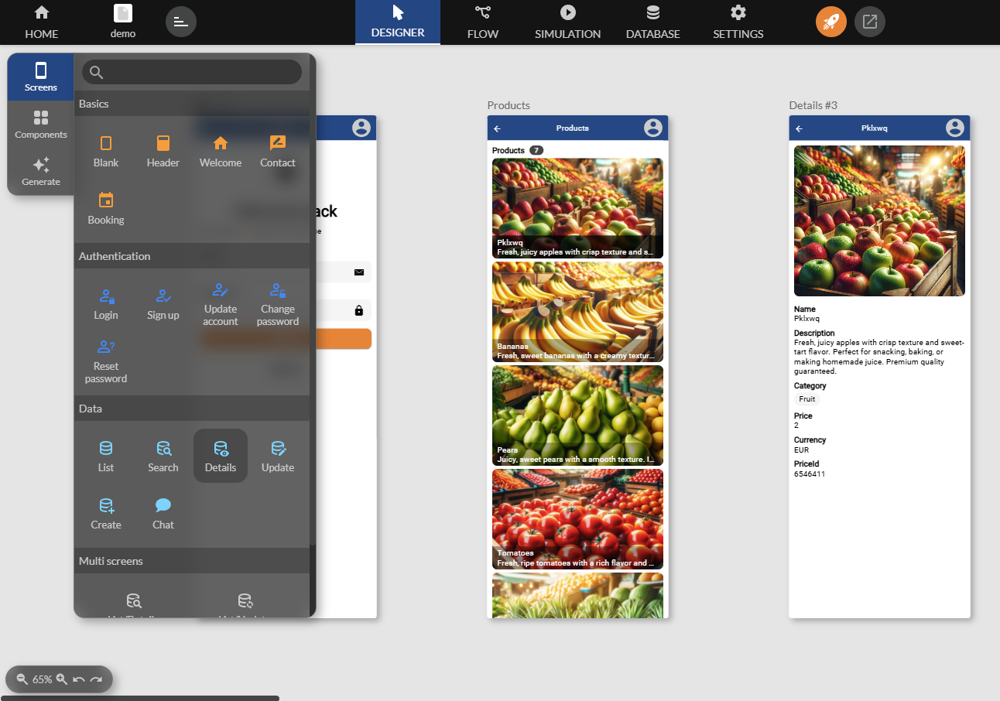

Favoris follower like
The Favorites / Follower / Like features allow users to save or like specific content.
They play a key role in enhancing the user experience by enabling personalized interaction and facilitating quick access to important items.
The Favorites, Followers, and Like features in Zyllio have similarities. This document uses Favorites as the main example, but the principles described below are also applicable to the other features.
Database configuration
To store the Favorites functionality, you need to use a predefined table called Favorites.
From the Database tab, move a Favorites table into the workspace.

The table must contain at least the following columns:
- User: This column stores the email address of the user adding a favorite. By default, it is often linked to User/Email.
- Favorite Item: This column represents the object or item that is marked as a favorite. For example: Products/Id for a product. This column must reference an item uniquely.
Example structure of the Favorites table:
| User | Favorite Item |
|---|---|
| user1@email.com | Product 45887 |
| user2@email.com | Product 11341 |
Set up authentication
Authentication allows each user to be identified in order to store their Favorites in a distinct and organized data space (for example, via their email). Favorites must be associated with a particular user to ensure they are accessible only to them.
Create a users table
In the Database tab, drag a Users table as follows:

Note that this Users table provides 2 example users useful during the design phase of your application.

Create an authentication screen
Select the Login screen template and drag it into the workspace as follows:

Add an items component
Items are information to be favorited. Here we use a catalog of fruits and vegetables.
From the Database tab, drag a Products table as follows:

Note that this Products table provides 7 example products useful during the design phase of your application.
Display items to favorite
Use the Grid component, for example, to display the products on a new screen and link it to the authentication screen.

Add a detail screen as follows.

Add the favorite component
Select the Favorite component, then the Favorites table, and drag the component into the detail screen as follows:

Configuration of the favorites component
The component requires configuration to specify the user who owns the Favorite as well as the item to be favorited.

Favorites Component
| Parameter | Description | Example |
|---|---|---|
| User | User who owns the favorite | Often the authenticated user User/Email |
| Item | Item to mark as favorite | An item selected by the user Products/Name |

Test favoriting
Run the simulation and test by selecting one of the users.

Finally, click on favorite.
Note that the component automatically adds and removes Favorites.

Adding to favorites without authentication
It is possible to add items to Favorites without authenticating the user. To do this, in the settings of the Favorites component, use the terminal identifier via the formula Terminal / Identifier.

You get:

Not authenticating the user means that Favorites will only be displayed on the terminal where they were selected.